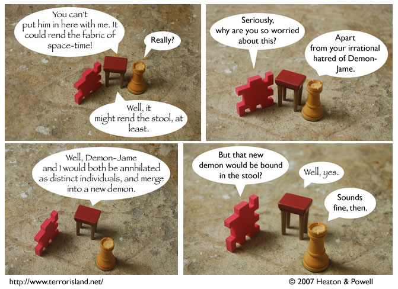

Strip #175
— Comic-Con Day, 2007
The demon rights movement still has a ways to go.
Notes, Thoughts, &c.
Ben’s Notes
Comic-Con starts tomorrow! If you’re there, feel free to come by and ask for a sketch. We don’t technically have an official booth, but I’ll be around the general webcomics area most of the time. Look for a long-haired guy in a T-shirt.
Lewis’s Notes
By this time today, we’ll be en route to San Diego, home of the San Diego Comic team, the San Diego Comic Conventioneers. They are my favorite team, and I have all of their rookie cards.
I hope they beat their rivals, the Otakon Otakanians (from Otako City, USA).